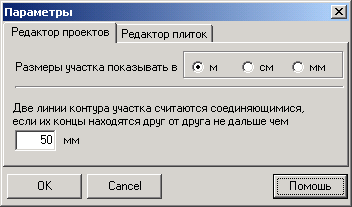
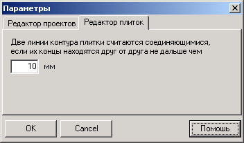

Настройки программы вызываются из окна проектов через меню Параметры .
В окне две вкладки. На первой можно настроить параметры проектов:

Здесь можно указать, какая размерность будет использована для координатной сетки, на которой рисуется участок. Чаще всего используются метры. Реже - сантиметры.
Также можно указать величину в миллиметрах, в пределах которой концы соседних линий будут считаться соединяющимися, то есть точно состыкованными.
На второй вкладке можно задать аналогичную величину для плиток:
